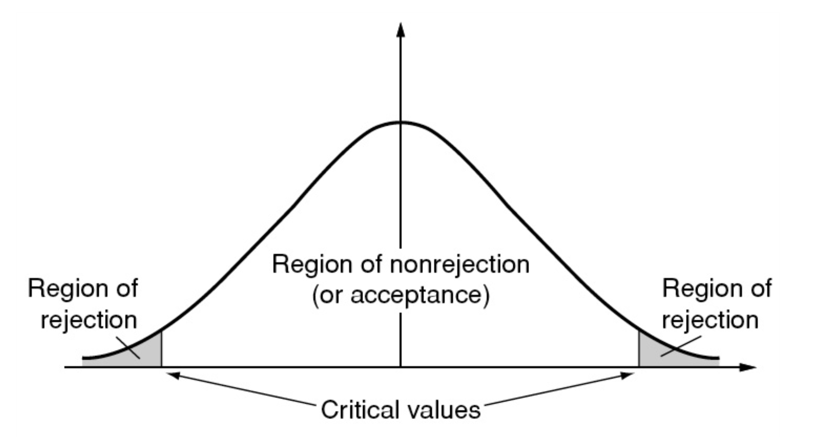
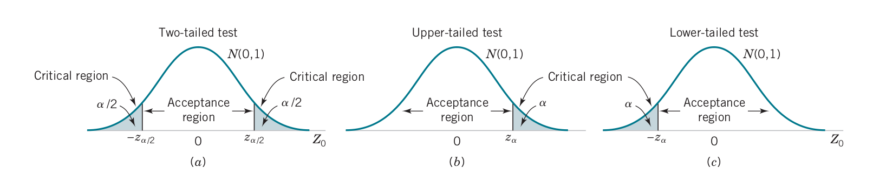
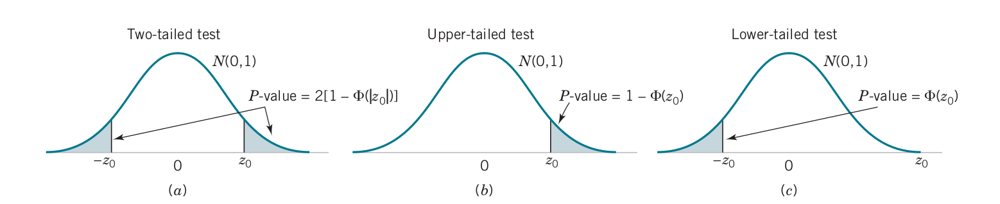
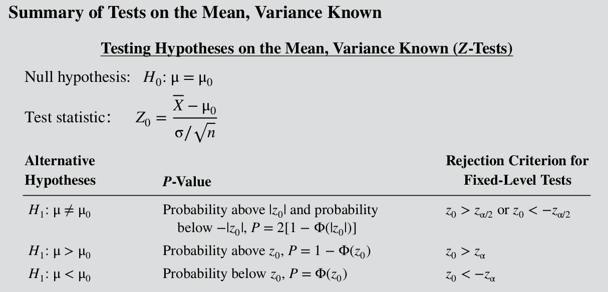
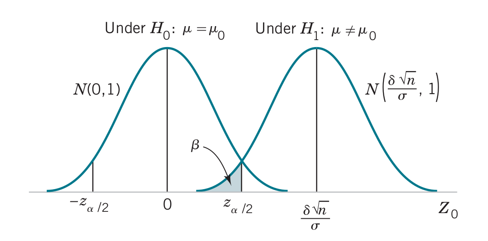
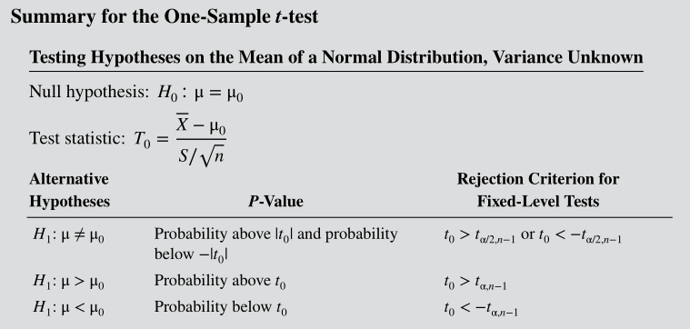
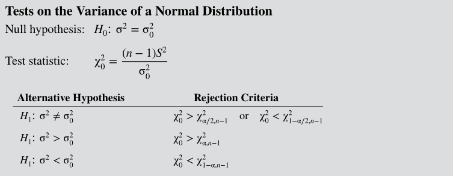
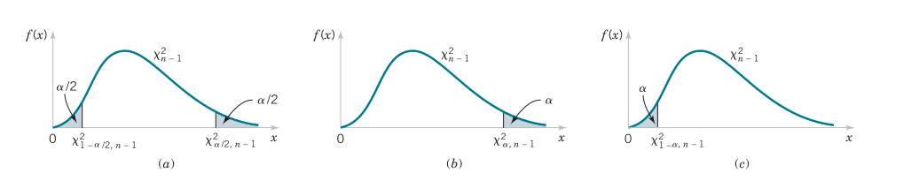

Hypotheses Null hypothesis: \(H_0: \mu = \mu_0\)
Alternative hypothesis: \(H_1: \mu \neq \mu_0\)
The specification for yield strength of rebars requires a mean value of 38 psi. From the rebars delivered at the site, we choose 25 at random to test: the sample mean was 37.5 psi and it is known that the standard deviation of rebar strength from the supplier is 3.0 psi.

\[H_0: \mu_Y = 38\text{ psi}\]
\[H_1: \mu_Y < 38\text{ psi}\]
\[z = \dfrac{\overline{x}-\mu}{\sigma / \sqrt{n}}\]
\[z=\dfrac{37.5-38}{3.0/\sqrt{25}}=-0.833\]
At 5% significance level, \(z_a=\Phi^{-1}(0.05)=-1.95\) and since \(z\) is outside the critical region we cannot reject \(H_0\)
Suppose that we wish to test the hypotheses \(H_0: \mu = \mu_0\) and \(H_1: \mu \neq \mu_0\). If we have a random sample \(X_1\), \(X_2\),…, \(X_n\) we can use the test statistic \[z_0 = \dfrac{\overline{x}-\mu_0}{\sigma / \sqrt{n}}\] which follows a \(N(0,1)\).



\(H_0: \mu = \mu_0\) and \(H_1: \mu \neq \mu_0\)
Suppose that \(H_0\) is false and \(\mu=\mu_0+\delta\)
\[E(Z_0)=\dfrac{E(\overline{X})-\mu_0}{\sigma / \sqrt{n}} = \dfrac{(\mu_0+\delta)-\mu_0}{\sigma / \sqrt{n}} = \dfrac{\delta \sqrt{n}}{\sigma}\]
\[Z_0 \sim N\left( \dfrac{\delta \sqrt{n}}{\sigma}, 1 \right)\]

\[\beta = \Phi \left( z_{\alpha/2}-\dfrac{\delta \sqrt{n}}{\sigma} \right) - \Phi \left( -z_{\alpha/2}-\dfrac{\delta \sqrt{n}}{\sigma} \right)\]
\[\beta \approx \Phi \left( z_{\alpha/2}-\dfrac{\delta \sqrt{n}}{\sigma} \right)\]
If \(z_{\beta}=\Phi(\beta)\) then \(-z_{\beta} \approx z_{\alpha/2}-\dfrac{\delta \sqrt{n}}{\sigma}\)
\[n \approx \dfrac{(z_{\alpha/2}+z_{\beta})^2 \sigma^2}{\delta^2}\] \[\delta=\mu-\mu_0\]
Suppose that the true burning rate of a propellant is 49 cm/s but the specifications require it to be 50 cm/s. If we know that the standard deviation is 2 cm/s, what is \(\beta\) for the two-sided test with \(\alpha=0.05\) and \(n=25\)?
What would be the sample size if the required test power is 90%?
What if the variance in the rebar example is unknown? Suppose that the sample mean is 37.5 psi and the sample standard deviation is 3.50 psi. Can you reject the null hypothesis about the mean?

Let's now test the population variance of \(\sigma^2=0.9\), assuming that the sample size has increased to 41 and \(\overline{x}=37.6\text{ psi}\) and \(\s=3.75\text{ psi}\).


A study of the thermal inertia properties of concrete had 5 samples tested and the average interior temperature was 23.01, 22.22, 22.04, 22.62, and 22.59 deg C. Test the hypothesis for \(\mu=22.8\) and 5% significance level.
What is the p-value?
No homework!